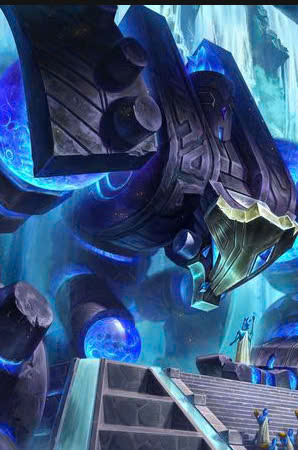
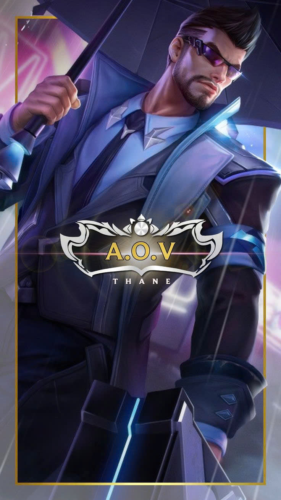
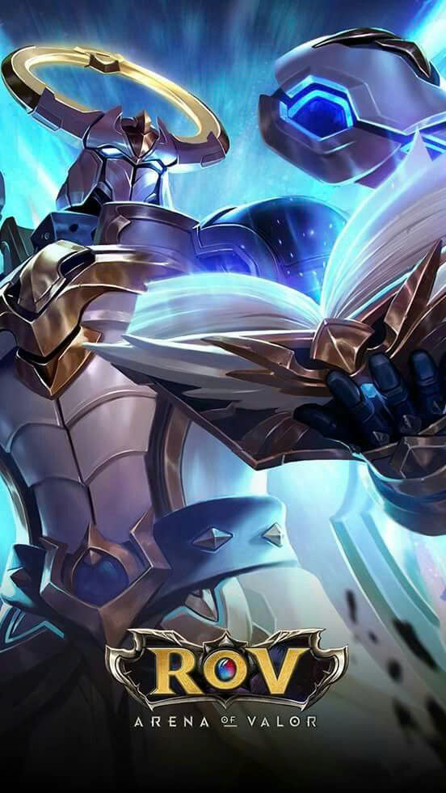

Đây sẽ là trợ thủ (tanker chân chính) đi kè kè bảo vệ đồng đội và chủ lực. Đối với dạng trợ thủ này
ta không cần đột biến hay làm quá nhiều điều gì cả, công việc rất đơn giản là đi bảo vệ những ai yếu máu,
cần cover hay đang lâm vào thế yếu hơn như là 1 đánh 2 hay 2 đánh 3 thì sự có mặt của người chơi tank giúp
cân bằng lực lượng, xông pha lao lên đỡ đòn để đồng đội được xả dame phía sau.
Đại địa hồi huyết là trang bị hầu như trận nào trợ thủ đỡ đòn thuần cũng sẽ ưu tiên
vì đây được anh em game thủ đánh giá là khá "lỗi game" khi hồi hơn 90% máu theo lượng %máu mà anh
em đã mất.
lồ gây ra, reo rắc nỗi sợ hãi cho đối phương.
Tuy là vậy, nhưng cách dùng của nó không hề đơn giản. Một số cách dùng hiệu quả các bạn có thể tham khảo thêm.
XEM THÊM
Như đã nói, dạng tank thuần này không cần một chút đột biến nào cả nên phụ trợ "lỗi game" không
kém gì hồi huyết là đại địa nguyên lực. Lý do tại sao trang bị này được đánh giá là "lỗi game" thì
các bạn có thể tham khảo thêm.
XEM THÊM

Cuối cùng là trang bị ít được các trợ thủ đỡ đòn lên nhất là Đại địa mở trói. Phụ trợ này chỉ có đúng một khả
năng là giải khống chế cho bản thân và đồng minh xung quanh nhưng trong 0,5s. Nếu bên đội bạn có quá nhiều khống chế thì trang
bị này lên sẽ rất vô ích và thay vào đó anh em game thủ sẽ pick Chaugnar - vị tướng giải khống chế trong 2s kèm giáp ảo.
Còn chi tiết về đại địa mở trói ra sao anh em hãy tham khảo thêm.
XEM THÊM